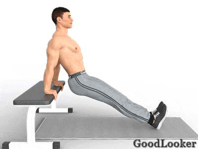

Третий день опять начинаем с приседаний, но с одной гантелью. Далее вы проработаете грудные, спину, плечи, руки – все самые важные группы мышц. Завершите тренировку 3-4 упражнениями на пресс.
Работающие мышцы: четырехглавые, двуглавые и приводящие мышцы бедер, большие ягодичные, подвздошные, икроножные, пресс.
Как выполнять:
Возьмите в руки гантель и держите ее вертикально, двумя руками у груди. Расставьте ноги шире плеч, носки разверните наружу. Глаза смотрят прямо, подбородок приподнят. Сделайте приседание до параллели с полом, при этом колени находятся точно над носками. Не сгибайтесь в пояснице, сохраняйте легкий прогиб. Если сложно держать равновесие, то поставьте ноги немного шире.
Разные виды приседаний обязательно должны входить в силовую тренировку фулбоди, так как они не только тренируют ноги, но и укрепляют все тело.
Работающие мышцы: большие грудные, трицепсы.
Как выполнять:
Возьмите гантели и лягте на лавку. Держите гантели перед собой так, как если бы в ваших руках была штанга. Оси снарядов должны составлять ровную линию. В начальном положении держите гантели на вытянутых вверх прямых руках. Немного согните руки в локтях, и в таком положении опустите снаряды вниз. Локти двигаются по траектории вбок и вниз, в нижней точке должен получиться прямой угол. Начинайте жим вверх, когда почувствуете растяжение в грудных мышцах. Вверху гантели могут соприкоснуться друг с другом.
В силовой тренировке для мужчин особое место занимает жим к груди, ведь именно он помогает развить грудные мышцы, подарив фигуре мужественные очертания.
Если у вас дома нет скамьи или удобных табуреток, то можно выполнять это упражнение на полу, но в этом случае амплитуда выполнения упражнения будет меньше, соответственно и эффективность упражнения снизится.
Работающие мышцы: разгибатели спины, широчайшие, нижняя часть трапеций, двуглавые мышцы бедер, большие ягодичные, предплечья.
Как выполнять:
В начальном положении гантели должны быть прижаты к бедрам горизонтально, ладони повернуты к корпусу. Наклонитесь вперед, сохраняя прогиб в пояснице, до параллели корпуса с полом. Ноги прямые, их можно немного согнуть в коленях. При наклоне руки остаются прямыми и напряженными. Когда гантели будут на уровне голеней, можно подниматься вверх.
Становую тягу с гантелями можно делать в классическом варианте – с согнутыми в коленях ногами. В таком случае снаряды нужно опускать до уровня пола. Делайте это силовое упражнение в домашних условиях, чтобы укрепить спину, кор и ноги.
Работающие мышцы: трицепсы, передние дельты, верх большой грудной мышцы.
Как выполнять:
Встаньте спиной к скамье и упритесь об нее прямыми руками. Выпрямите ноги, опираясь на пятки. Согните руки в локтях, перенося вес тела на руки. Ноги и все остальное тело не двигаются, работают только руки. Локти смотрят назад и сгибаются строго под прямым углом. Во время упражнения вы должны чувствовать заднюю поверхность плеч, это значит, что трицепсы работают.
Обратные отжимания – отличное силовое упражнение в домашних условиях, так как его можно делать с опорой на любую поверхность: диван, низкий стол, стул. Чтобы сделать упражнение сложнее, положите ноги на любую высокую опору, чтобы сделать легче – согните ноги в коленях.

Работающие мышцы: бицепсы, плечевые мышцы, предплечья.
Как выполнять:
В начальной позиции гантели повернуты боком оси к корпусу. Сгибайте поочередно каждую руку в локте с максимальной амплитудой. В конечной точке гантель окажется на уровне плеча.
В силовой тренировке фулбоди не обойтись без прокачки рук, в которой вам поможет простое упражнение «молоток». Но даже здесь есть нюансы: не раскачивайте руки, помогая себе выжимать гантель, и не делайте резких движений, которые могут привести к травмам.
Работающие мышцы: задние дельты, широчайшие и ромбовидные спины, трапеции.
Как выполнять:
Руки находятся по бокам, гантели лежат в ладонях, обращенных к корпусу. Немного согните ноги в коленях, наклонитесь вперед, слегка прогибаясь в пояснице. Руки при этом немного согнуты в локтях, опущены вниз и обращены друг к другу. Из этого положения разводите руки в стороны до параллели с полом до ощущения работы плечевых мышц. Не разгибайте полностью руки в локтях и не сгибайте поясницу.
Во время выполнения этого силового упражнения в домашних условиях, старайтесь соблюдать идеальную технику, иначе вы не сможете прокачать целевые мышцы и только нагрузите суставы.